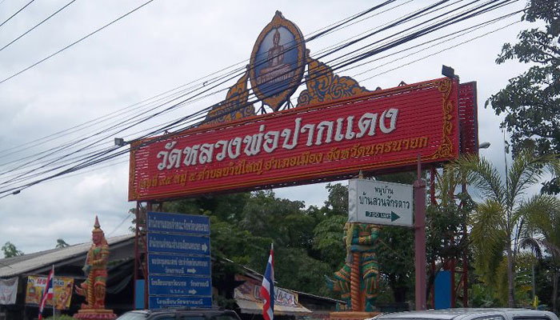

วัดพราหม์มณี หรือ วัดหลวงพ่อปากแดง ถือเป็นวัดเก่าแก่วัดหนึ่งใน จ.นครนายก วัดนี้เป็นวัดเก่าแก่ สร้าง ในสมัยรัชกาลที่ 5 ปัจจุบัน เป็นวัดพัฒนา ตัวอย่าง ภายในบริเวณวัดร่มรื่น สวยงามจัด เป็นหมวด หมู่ เขตพุทธาวาส สังฆาวาส เป็นระเบียบ สะอาดสะอ้านทั้งสถานที่ บรรเทาทุกข์ก็ มีผู้รักษาดูแล ตลอดเวลา มีพระประธานศักดิ์สิทธิ์ ที่เป็นที่เคารพนับถือกันอย่างกว้างขวาง มีชื่อว่า "หลวงพ่อปากแดง" เป็นพระพุทธรูปปางสมาธิ สร้างด้วยโลหะ สัมฤทธิ์หน้าตักกว้าง 49 นิ้ว สูง 1 เมตร เป็นศิลปะสมัยล้านช้าง จีวรเป็นลายดอกพิกุล พระโอษฐ์ แย้มทาสีแดงเห็นชัด ชาวบ้านจึงเรียกว่า "หลวงพ่อปากแดง" สิ่งที่เด่นสะดุดตา คือ ที่ปากของ หลวงพ่อมี สีแดงสดเหมือนมีผู้นำลิปสติก ไปทาไว้ ผู้เฒ่าผู้แก่ย่านนั้นยืนยันว่าเห็นปากท่านแดง แบบนี้มาตั้งแต่เกิด เป็นอันว่าหลวงพ่อมีปากสีแดงมา นับร้อยปีแล้ว โดยไม่มีใครนำสี ไปทาแต่อย่างใด นับเป็นความแปลก ใจแก่ผู้ที่ได้ ไปพบเห็นมี ตำนานเชื่อกันหลวงพ่อปากแดง เป็นพระพุทธรูปพี่น้องกับหลวงพ่อ พระสุกและหลวงพ่อพระไส ที่ประดิษฐานอยู่ที่ จ.หนองคาย ในปัจจุบันที่ได้ อัญเชิญมาจาก นครเวียงจันทน์ ลาว พอมาถึงประเทศไทย ชาวบ้าน ได้แยกย้ายไปตาม วัดต่างๆ ส่วนหลวงพ่อปากแดง ก็มาเป็นพระพุทธรูป ศักดิ์สิทธิ์ ของชาว จ.นครนายก จนทุกวันนี้
ทุกวันเสาร์-อาทิตย์ และวันหยุดนักขัตฤกษ์ ประชาชนเดินทางไปเที่ยวน้ำตกสาริกาจะต้องแวะกราบ สักการบูชา พร้อมกับบนบานด้วย กล้วยน้ำว้า 9 หวี หมากพลู 9 ชุด พวงมาลัย 9 พวง กันอย่างล้นหลามตาม ความปรารถนาตัวเองจะมีประชาชน ทั่วสารทิศเดินทางไป เที่ยวพักผ่อน หย่อนใจที่ น้ำตกสาริกา จ.นครนายก ทั้งรถโดยสารและรถส่วนตัวกันเป็นจำนวนมาก ทำให้รถรา แน่นขนัดเต็มลานวัดทุกวัน พระครูโสภณพรหมคุณ หรือที่ชาวบ้าน เรียกขานท่านว่า หลวงพ่อตึ๋ง เจ้าอาวาสวัดพราหมณี บอกว่า สาธุชนจำนวนไม่น้อยที่ตั้งใจ เดินทางไปกราบนมัสการบนบานหลวงพ่อปากแดง เพื่อขอให้ ตัวเองและครอบครัว ทำมาหากินเจริญรุ่งเรือง รับราชการเป็นทหาร ตำรวจ ข้าราชการพลเรือน ขอให้ตัวเอง มียศตำแหน่งสูงขึ้น ส่วนใหญ่ผู้ ที่มาบนบาน ก็ขอให้หน้าที่การงานเติบโต ธุรกิจเจริญรุ่งเรือง เรื่องที่ไม่พลาด คือขอเลขเด็ด ขอให้ถูกหวยรวยทรัพย์
เดินทางโดยรถส่วนตัว
ตามถนนสายนครนายก-น้ำตกสาริกา เลยตัวจังหวัดมา 4 กิโลเมตร ขวามือจะมีป้ายใหญ่ๆ เขียนไว้ว่า “ถึงแล้ว หลวงพ่อปากแดง วัดพราหมณี” ตั้งเด่นเห็นชัดเจนอยู่ริมถนน
เดินทางโดยรถสาธารณะ
มีรถตู้จากอนสาวรีย์ชัย ให้ขึ้นรถตู้ กรุงเทพ – เขื่อนขุนด่าน จากรังสิตให้ขึ้นรถตู้สายองครักษ์-เขื่อนขุนด่านที่ใต้สะพานฟิวเจอร์รังสิต รถจะผ่านน้ำตกวังตะไคร้ อุทยานพระพิฆเนศ วัดหลวงพ่อปากแดง และสิ้นสุดที่หน้าเขื่อนขุนด่าน บอกให้รถไปส่งที่วัด และให้ขอเบอร์โทร เวลากลับหรือจะนั่งรถไปต่อที่เขื่อนขุนด่านก็ให้โทรแจ้ง